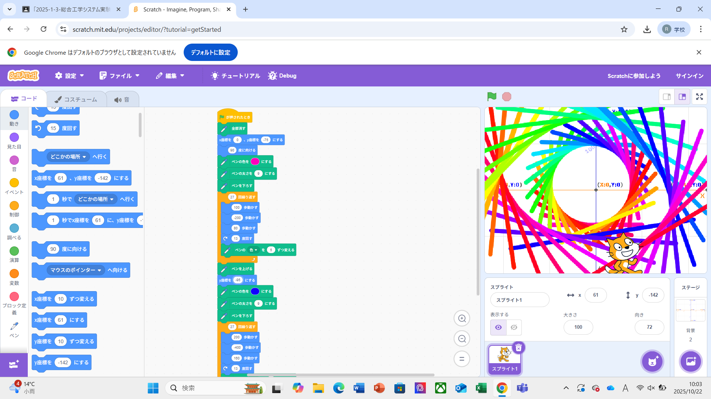
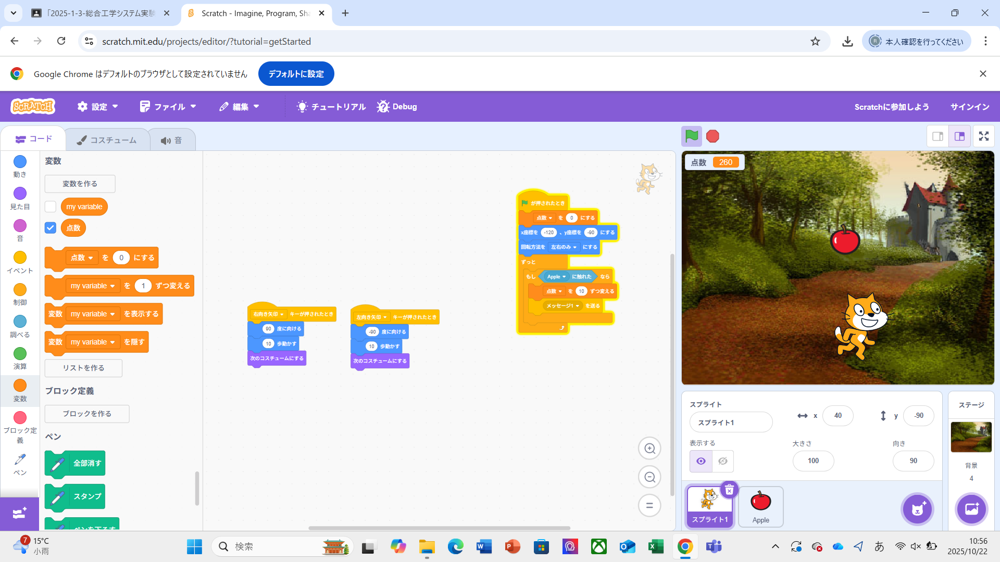

1週目のレポート ： 公大高専１年実習I-1
3b班38番 かなりん
第1週目
1-1 サイエンスアート

1.内容
Scratchで猫の動きに合わせて線を引く。私がつくったサイエンスアートは円のような図形の書き方をベースに使い、線の色を一定の頻度で変わるように設定した。
猫の歩数を調整することによって円の大きさを調整することが可能だと学んだため、私のサイエンスアートではそれを利用して大きさを変えて二重の円を描いた。
2.感想
プログラムは苦手分野で組み立てがわかりづらく難しかったが、例で教わったことをいろいろと組み合わせながら数値を変えていったりと工夫をして、
簡単ではあるものの自分の頭の中で思い描いたものをパソコン上で描くことができて楽しかった。
1-2 ゲーム

1.内容
猫を動かすにはx軸y軸を基準とするから、座標の理解が必要であり、
乱数を設定することでランダム性のあるゲームを制作することが可能だと学んだ。また、猫側だけでなくリンゴ側にもプログラムを必要とすることを学んだ。
2.感想
最初はゲームの製作なんて難しくてしっかりとできるか心配していたが、
説明を読みながら進めていくと思いのほかスムーズに制作をすることができて達成感を感じることができた。
1-3 ホームページ作成
私のホームページ
1.内容
Githubを使用してアカウントをつくり、ホームページを制作する。設定することは少し多いが比較的簡単に短時間で作ることができる。
自身のホームページへの書き込みの仕方や画像の組み込み方を学ぶことができた。
2.感想
ホームページを作ったことは一度もなく、授業前はできるかとても不安だったが
やってみると意外に簡単でスムーズに作ることができて楽しかった。
各ページへのリンク
1週目のレポート
2週目のレポート
3週目のレポート
私のホームページ